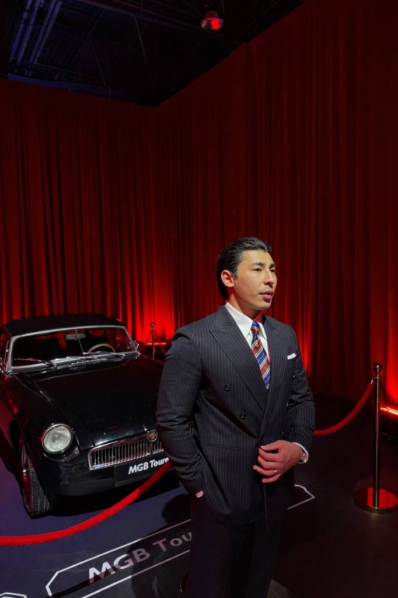
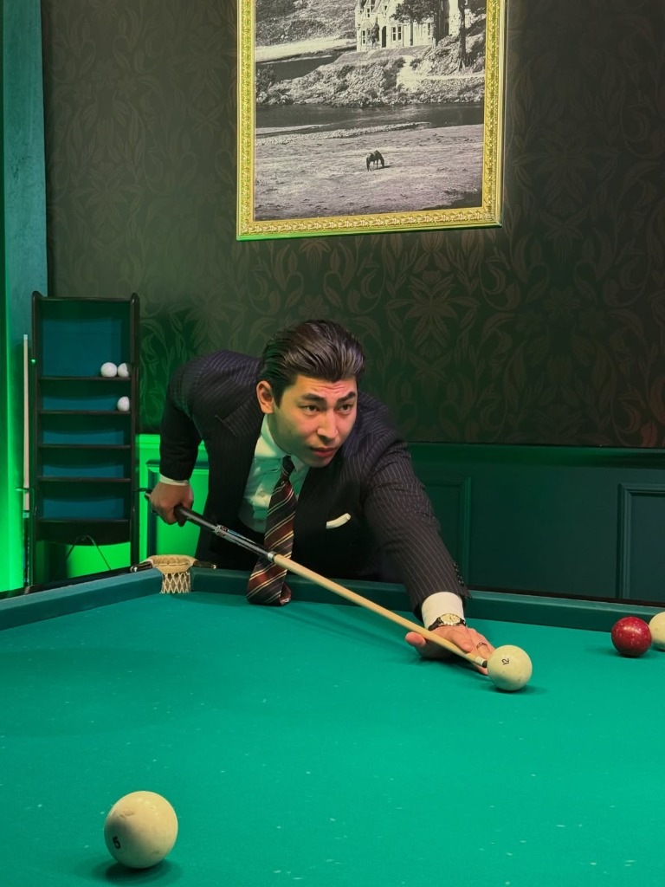
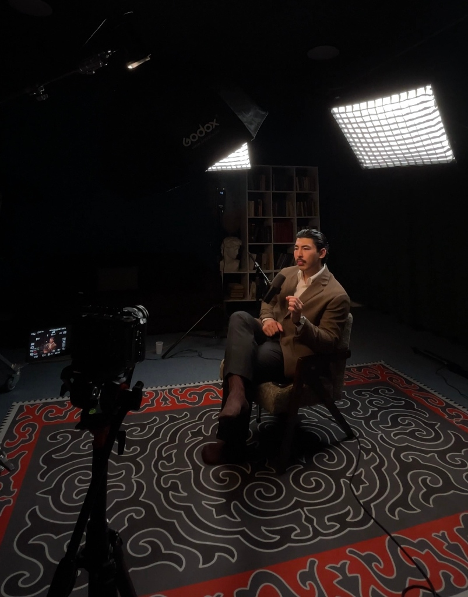
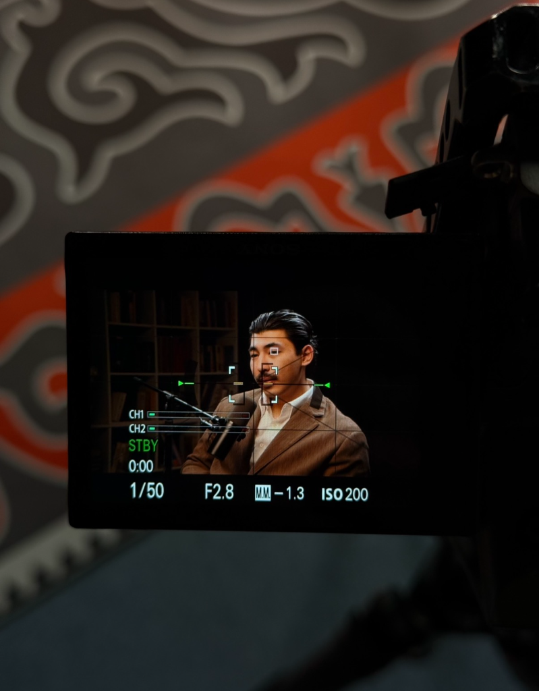

Приветствую! Меня зовут Избасар и я твой проводник к смыслу жизни и твоей уникальности
Чтобы записаться на консультацию, нажмите на кнопку «Связаться»
Связаться в WhatsApp Бесплатное видео внизу ⬇️
Меня зовут Избасар Мамыров
Я дипломированный психолог, специалист в области когнитивно-поведенческой терапии (КПТ) и ICF-коуч. За время практики я провёл 300+ практик и консультаций и работал с 100+ клиентами.
С какими запросами я помогаю людям?
Я помогаю разобраться с тем, что часто невозможно решить простым советом:
Разрыв между умом и действием
Почему ты понимаешь, что нужно делать, но продолжаешь делать наоборот.
Повторяющиеся сценарии
Почему одни и те же ситуации повторяются в отношениях и жизни снова и снова.
Тревога и неуверенность
Откуда берётся фоновая тревога, сильная неуверенность и постоянное внутреннее напряжение.
Влияние прошлого опыта
Почему прошлые травмы, детский опыт и старые обиды продолжают управлять твоим настоящим.
Внешний успех без радости
Почему ты можешь быть успешным внешне, но внутри не чувствовать настоящего удовлетворения.
Чужие ожидания и страхи
Как перестать жить исключительно из страха осуждения, чужих сценариев и старых установок.
Без поверхностных советов и абстрактной философии
Я не верю в универсальные советы вроде «просто полюби себя» или «начни мыслить позитивно».
Мы разбираемся глубже: что сформировало твоё текущее состояние, какие убеждения управляют твоими решениями, какие сценарии ты повторяешь и что конкретно можно изменить.

Как изменить свою жизнь через изменение состояния?
16 минут, которые помогут по-другому посмотреть на себя и на то, что происходит в твоей жизни.
«Твоё состояние — не случайность. Оно формируется твоим опытом, убеждениями, внутренними установками и тем, что с тобой происходило раньше. Если ты испытываешь тревогу — у этого есть причины. А значит, его можно изменить.»
В этом видео ты узнаешь:
- Почему прошлое продолжает влиять на твоё настоящее;
- Что такое психологическое состояние и как оно формируется;
- Почему мы реагируем на некоторые ситуации сильнее, чем хотелось бы;
- Как формируются ограничивающие убеждения;
- Почему ты можешь осознавать проблему, но всё равно продолжать действовать по старому сценарию;
- С чего начать изменение своего состояния;
- Как постепенно начать строить жизнь, которую действительно хочешь ты.

Личная консультация: разберём, что на самом деле происходит
Иногда недостаточно просто поговорить с близким человеком. Потому что проблема может быть не в конкретной ситуации, а в механизме, который постоянно приводит тебя к одним и тем же результатам. На консультации мы не будем просто обсуждать проблему — мы будем разбирать её структуру.
Что мы сделаем на консультации?
Определим, что происходит сейчас
Разберём твою текущую ситуацию, внутреннее состояние, автоматические мысли, эмоции и реальное поведение.
Найдём первопричины
Посмотрим, откуда сформировались определённые эмоциональные реакции, убеждения и привычные модели поведения.
Выявим повторяющийся сценарий
Поймём, почему похожие жизненные ситуации возникают снова и снова и какую роль в этом играешь ты сам.
Найдём ограничивающие убеждения
Определим подсознательные мысли и установки, которые скрыто влияют на твои решения, отношения и самооценку.
Сформируем новую точку зрения
Ты увидишь ситуацию не только через привычную эмоциональную реакцию, но и с другой, объективной перспективы.
Определим дальнейшие шаги
В конце у тебя будет ясность и четкое понимание, что именно необходимо менять и с чего конкретно начать.
После консультации ты сможешь:
- Лучше понимать глубокие причины своего состояния;
- Увидеть, что именно удерживает тебя в текущей жизненной ситуации;
- Чётко определить свои повторяющиеся сценарии;
- Разобраться с конкретной проблемой, которая занимает тебя прямо сейчас;
- Получить практические инструменты для работы с мыслями и состояниями;
- Понять, какие конкретные действия необходимо предпринять дальше.
Как проходит консультация?
«Ты приходишь со своей ситуацией — мы вместе разбираем её до тех пор, пока не появляется полная ясность: что происходит, почему происходит и что с этим делать.»

Практическое руководство по работе с внутренним состоянием
Руководство для тех, кто хочет лучше понять себя, свои состояния и начать менять свою жизнь изнутри.
В книге собраны идеи и практики, которые помогут тебе:
- Лучше понимать собственные психологические состояния;
- Замечать свои автоматические эмоциональные реакции;
- Находить и трансформировать ограничивающие убеждения;
- Разбираться в истинных причинах своего поведения;
- Видеть прямую связь между мыслями, эмоциями и действиями;
- Постепенно формировать новое отношение к себе и своей жизни.